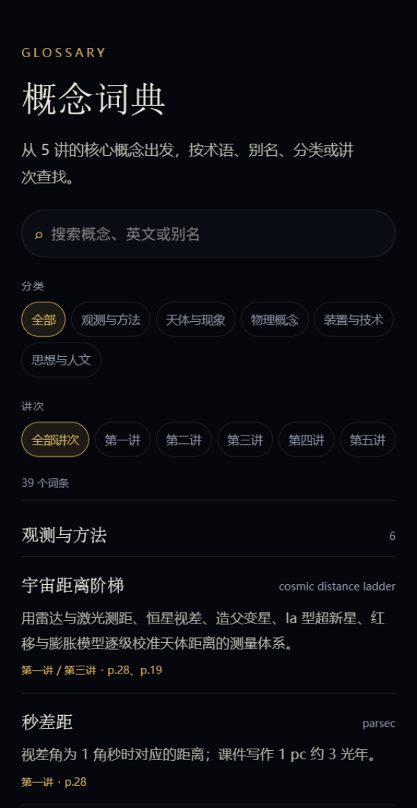
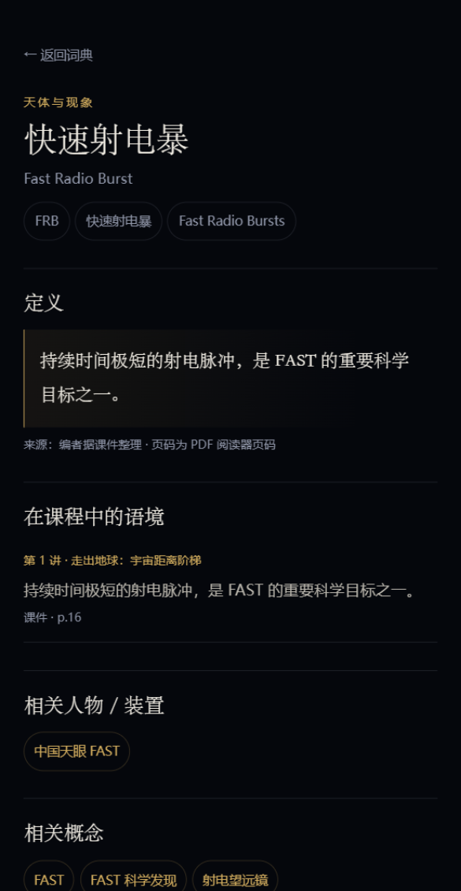
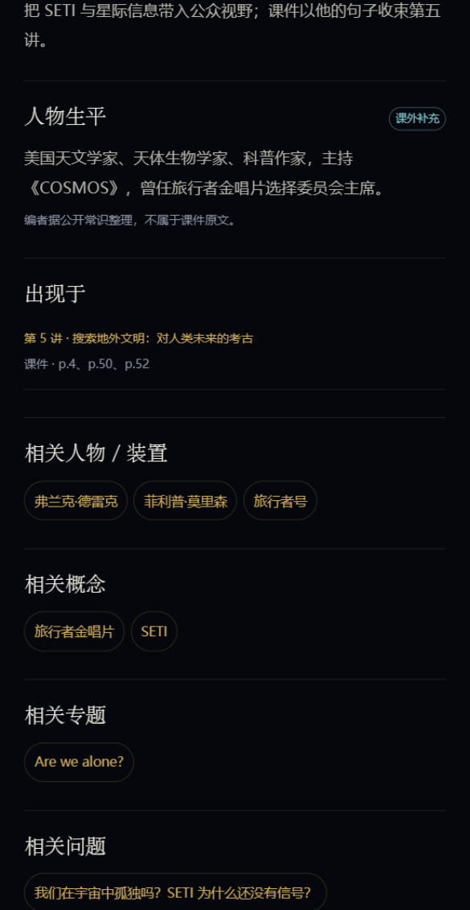
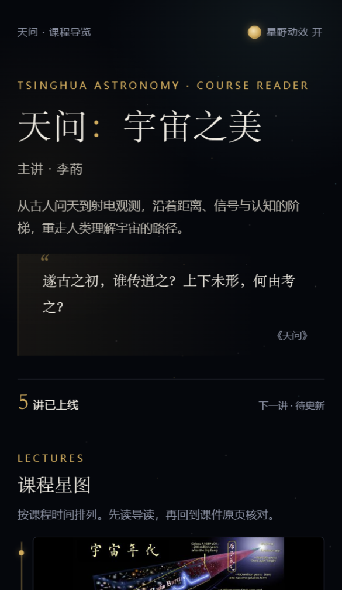
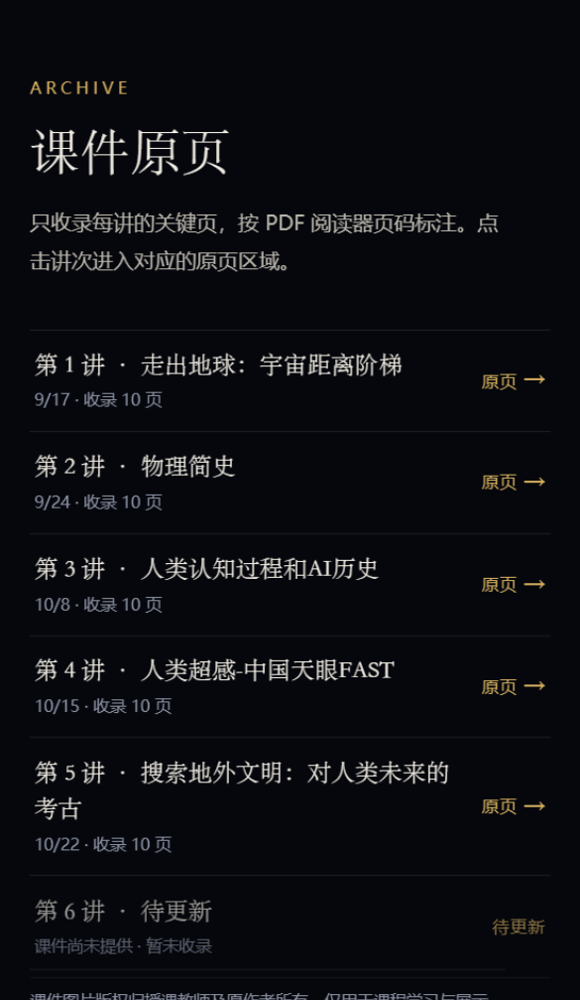
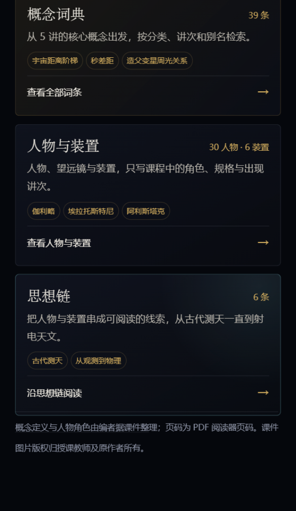
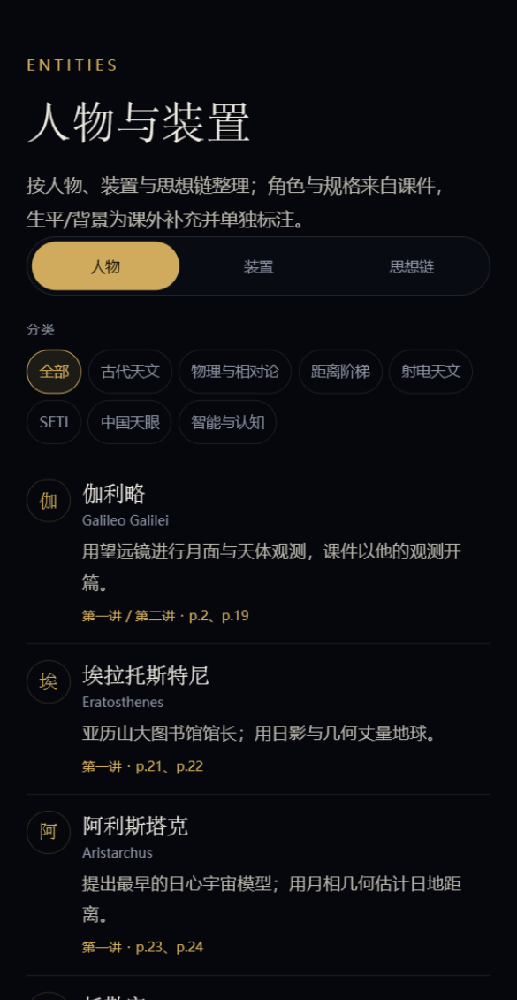
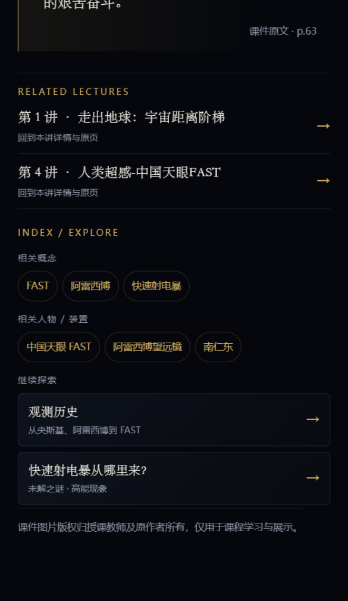
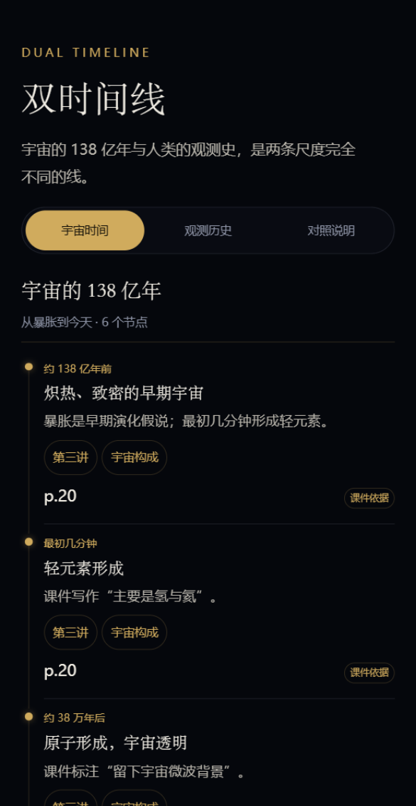
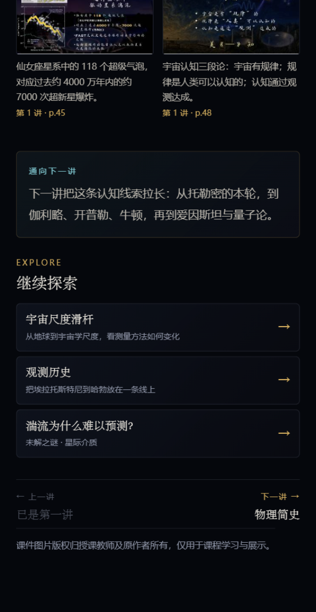

4.3 概念词典
39 个词条来自 5 讲概念的去重合并。支持中英文/别名搜索、分类筛选、讲次筛选；每个词条有定义、课件语境、相关概念、人物/装置、专题和开放问题。


概念定义尽量贴近课件原话；跨讲概念只在词条中定义一次，讲次页保留“本讲语境”并链接到词条。
4.4 人物与装置
30 位人物、6 个装置、6 条思想链。人物/装置卡片只写课程中的角色；详情页另外提供一段“课外补充”的生平/背景，并明确标注不是课件原文。


把 5 讲课程内容整理成一条可读、可查、可探索的阅读路径：从课程星图与课件原页，到概念、人物与装置、宇宙尺度、双时间线和未解之谜。
课程内容原本主要分布在 5 份 PDF 课件里。这个作业没有重写课程，而是把课件整理成一条更完整的阅读路径：
设计原则：课件是唯一内容基线；所有观点、页码、原页都回到课件。没有课件出处的数字标为“课外补充”，不确定的内容不编造。
| 项目 | 当前状态 |
|---|---|
| 已上线讲次 | 5 讲；每讲 10 张关键页，可全屏查看 |
| 第六讲 | 保持 upcoming 占位，不生成详情页、不生成死链 |
| 五个模块 | 课程 / 主线 / 索引 / 探索 / 原页 |
| 规模 | 39 概念、30 人物、6 装置、6 思想链、8 尺度、6+13 时间线、6 个开放问题 |
| 技术 | 原生 WXML / WXSS / JS；无 npm 依赖、无后端、无网络请求 |
| 发布 | private 仓库；正式 AppID 已配置；尚未上传体验版 |
| Tab | 回答的问题 | 主要内容 |
|---|---|---|
| 课程 | 这门课讲什么？从哪里开始？ | 课程星图、讲次详情、第六讲占位、索引/探索入口 |
| 主线 | 课程的核心观点是什么？ | 6 篇专题 + 相关讲次/索引/探索链接 |
| 索引 | 某个概念/人物/装置是什么？ | 概念词典、人物与装置、思想链三张并列卡片 |
| 探索 | 尺度多大？时间多长？还有什么不知道？ | 宇宙尺度、双时间线、未解之谜 |
| 原页 | 原始课件在哪里？ | 按讲次索引 50 张关键页 |
课程星图是首页主体；第一讲封面使用第一讲 p.16“宇宙年代”页面。首页保留《天问》引文、主讲信息、已上线讲次和第六讲“待更新”占位。


索引页把“概念词典 / 人物与装置 / 思想链”做成三张并列卡片。思想链不再是人物与装置下面的附属内容，而是独立入口。


39 个词条来自 5 讲概念的去重合并。支持中英文/别名搜索、分类筛选、讲次筛选；每个词条有定义、课件语境、相关概念、人物/装置、专题和开放问题。


概念定义尽量贴近课件原话；跨讲概念只在词条中定义一次，讲次页保留“本讲语境”并链接到词条。
30 位人物、6 个装置、6 条思想链。人物/装置卡片只写课程中的角色；详情页另外提供一段“课外补充”的生平/背景，并明确标注不是课件原文。

专题底部自动显示相关讲次、相关概念、相关人物/装置和“继续探索”入口，不复制其他模块的长文。

8 个层级，从地球到宇宙学尺度；滑杆按对数映射，支持上一级/下一级和直接点击层级。课件依据与“课外补充”分开标注，并明确说明这是“测量方法随尺度变化”的示意滑杆，不是精确宇宙地图。

两条独立轨道：宇宙的 6 个节点和人类观测史的 13 个节点。页面明确说明“时间与尺度不按比例”，避免把人类事件挤在一条线性轴末端。

6 个开放问题按主题筛选；详情只写“课件已知 / 仍未知 / 为什么重要”，不把未知写成答案。


每讲 10 张关键页；详情页保留导读、问题、概念、人物/装置、金句和原页画廊。概念和人物可以跳到索引；页面底部新增“继续探索”，推荐 1–3 个尺度/时间线/问题入口。


| 内容 | 数量 / 来源 |
|---|---|
| 讲次 | 5 讲已上线 + 第六讲占位 |
| 原页 | 50 张，均来自课程 PDF，标注页码 |
| 专题 | 6 篇，跨讲组织 |
| 概念 | 39 条，来自 5 讲 concepts 去重合并 |
| 人物 / 装置 | 30 位人物、6 个装置、6 条思想链 |
| 尺度 / 时间线 | 8 层；6 个宇宙节点 + 13 个观测史节点 |
| 开放问题 | 6 个 |
内容只在一个地方定义：讲次在 data/lectures.js，专题在 data/topics.js，概念在 data/glossary.js，人物/装置在 data/entities.js，尺度和时间线、问题分别在对应数据文件里；页面通过 ID 互相链接，不复制全文。
packageL1、packageL2、packageL3 三个分包。node scripts/validate-content.js；页面逻辑冒烟测试：node scripts/smoke-pages.js。docs/lecture-6-integration.md 接入课程、原页、主线、索引、探索等栏目。image 字段，拿到授权素材后可补。https://github.com/rainningsun/tianwen-cosmos-miniprogram（private；需要邀请访问）。miniprogramRoot 已配置为 miniprogram/。wx2e8e3cde13016238；体验版尚未上传，如需真机体验，需要把助教/老师加入体验成员。